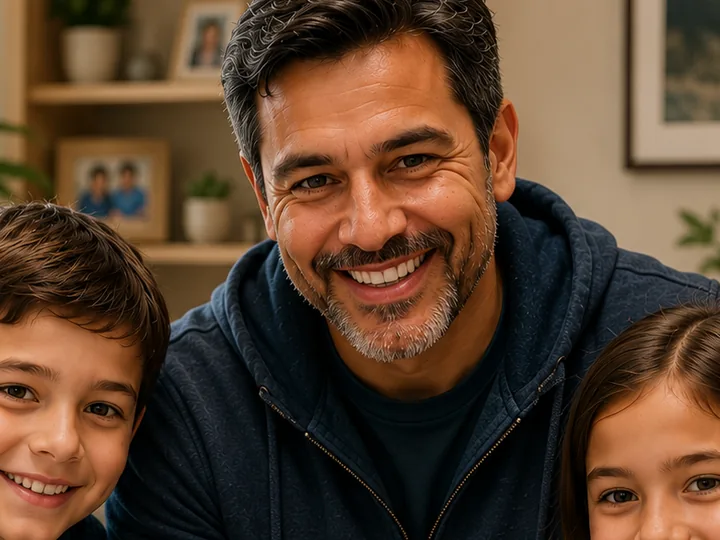

Gen X parent (with kids)
Jordan Martinez, 42
Needs a smooth, low-stress, and engaging family experience.
Goals with RockX
- Entertain his kids while exposing them to music history
- Find interactive or hands-on exhibits for children
- Make the visit feel "worth it" for the whole family
Needs journey
- BeforeUses "Plan a Visit" to build a family-friendly route
- DuringNavigates with the mobile docent; lets the kids try AR
- AfterShares the day with friends and family
Tolerance for tech friction
Will use the tour and AR, but drops them if his kids can't use them.